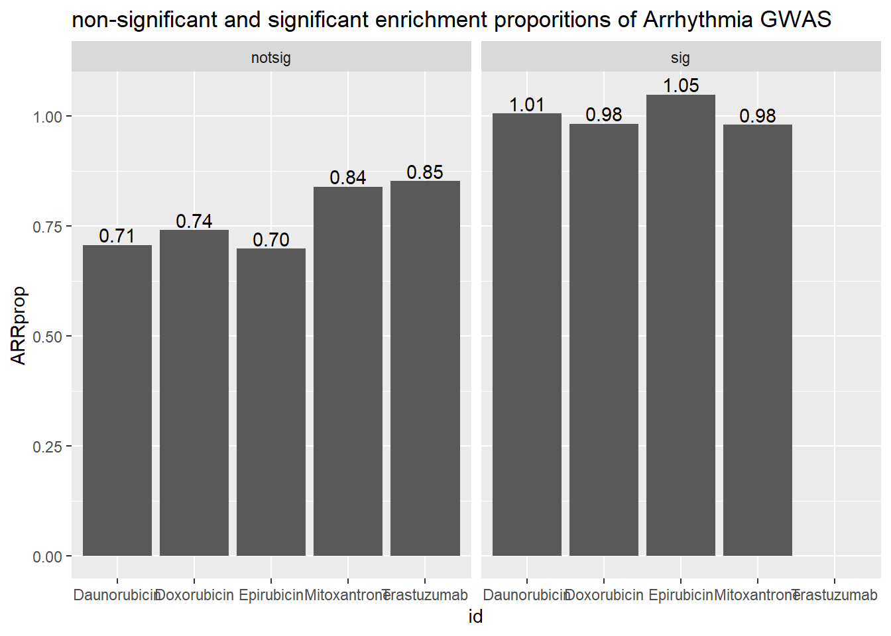
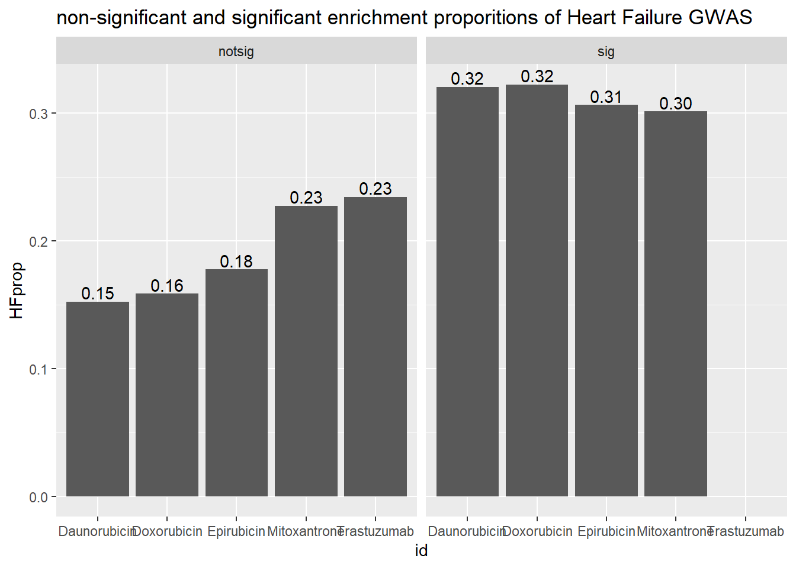
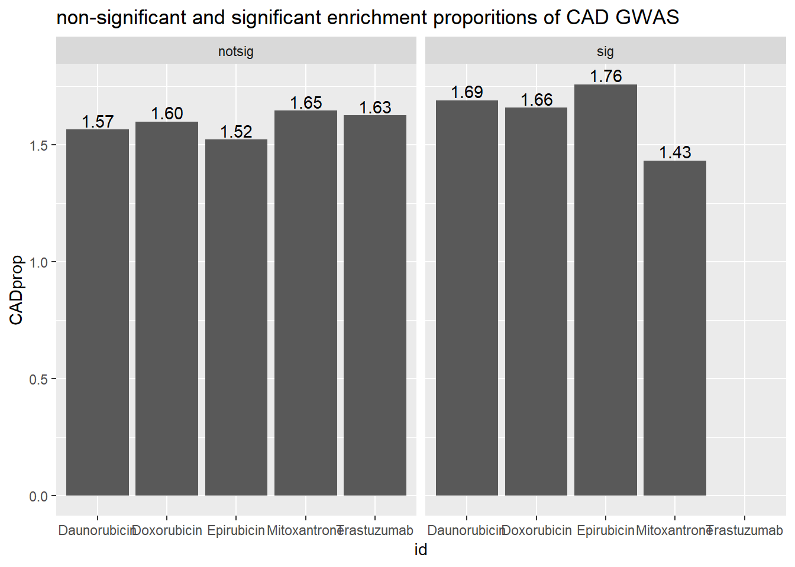

Comparisons with other data sets
ERM
2023-05-22
Last updated: 2023-05-22
Checks: 7 0
Knit directory: Cardiotoxicity/
This reproducible R Markdown analysis was created with workflowr (version 1.7.0). The Checks tab describes the reproducibility checks that were applied when the results were created. The Past versions tab lists the development history.
Great! Since the R Markdown file has been committed to the Git repository, you know the exact version of the code that produced these results.
Great job! The global environment was empty. Objects defined in the global environment can affect the analysis in your R Markdown file in unknown ways. For reproduciblity it’s best to always run the code in an empty environment.
The command set.seed(20230109) was run prior to running
the code in the R Markdown file. Setting a seed ensures that any results
that rely on randomness, e.g. subsampling or permutations, are
reproducible.
Great job! Recording the operating system, R version, and package versions is critical for reproducibility.
Nice! There were no cached chunks for this analysis, so you can be confident that you successfully produced the results during this run.
Great job! Using relative paths to the files within your workflowr project makes it easier to run your code on other machines.
Great! You are using Git for version control. Tracking code development and connecting the code version to the results is critical for reproducibility.
The results in this page were generated with repository version de54fd5. See the Past versions tab to see a history of the changes made to the R Markdown and HTML files.
Note that you need to be careful to ensure that all relevant files for
the analysis have been committed to Git prior to generating the results
(you can use wflow_publish or
wflow_git_commit). workflowr only checks the R Markdown
file, but you know if there are other scripts or data files that it
depends on. Below is the status of the Git repository when the results
were generated:
Ignored files:
Ignored: .RData
Ignored: .Rhistory
Ignored: .Rproj.user/
Ignored: data/41588_2018_171_MOESM3_ESMeQTL_ST2_for paper.csv
Ignored: data/Arr_GWAS.txt
Ignored: data/BC_cell_lines.csv
Ignored: data/CADGWASgene_table.csv
Ignored: data/Clamp_Summary.csv
Ignored: data/Cormotif_24_k1-5_raw.RDS
Ignored: data/DAgostres24.RDS
Ignored: data/DAtable1.csv
Ignored: data/DDEMresp_list.csv
Ignored: data/DDE_reQTL.txt
Ignored: data/DDEresp_list.csv
Ignored: data/DEG-GO/
Ignored: data/DEG_cormotif.RDS
Ignored: data/DF_Plate_Peak.csv
Ignored: data/Da24counts.txt
Ignored: data/Dx24counts.txt
Ignored: data/Dx_reQTL_specific.txt
Ignored: data/Ep24counts.txt
Ignored: data/GOplots.R
Ignored: data/HFGWASgene_table.csv
Ignored: data/Hf_GWAS.txt
Ignored: data/K_cluster
Ignored: data/K_cluster_kisthree.csv
Ignored: data/K_cluster_kistwo.csv
Ignored: data/LDH48hoursdata.csv
Ignored: data/Mt24counts.txt
Ignored: data/RINsamplelist.txt
Ignored: data/Seonane2019supp1.txt
Ignored: data/TOP2Bi-24hoursGO_analysis.csv
Ignored: data/TR24counts.txt
Ignored: data/Top2biresp_cluster24h.csv
Ignored: data/Viabilitylistfull.csv
Ignored: data/allexpressedgenes.txt
Ignored: data/allgenes.txt
Ignored: data/allmatrix.RDS
Ignored: data/avgLD50.RDS
Ignored: data/backGL.txt
Ignored: data/cormotif_3hk1-8.RDS
Ignored: data/cormotif_initalK5.RDS
Ignored: data/cormotif_initialK5.RDS
Ignored: data/cormotif_initialall.RDS
Ignored: data/counts24hours.RDS
Ignored: data/cpmnorm_counts.csv
Ignored: data/cvd_GWAS.txt
Ignored: data/dat_cpm.RDS
Ignored: data/data_outline.txt
Ignored: data/efit2.RDS
Ignored: data/efit2results.RDS
Ignored: data/ensembl_backup.RDS
Ignored: data/ensgtotal.txt
Ignored: data/filenameonly.txt
Ignored: data/filtered_cpm_counts.csv
Ignored: data/filtered_raw_counts.csv
Ignored: data/filtermatrix_x.RDS
Ignored: data/folder_05top/
Ignored: data/gene_prob_tran3h.RDS
Ignored: data/gene_probabilityk5.RDS
Ignored: data/gostresTop2bi_ER.RDS
Ignored: data/gostresTop2bi_LR
Ignored: data/gostresTop2bi_LR.RDS
Ignored: data/gostresTop2bi_TI.RDS
Ignored: data/gostrescoNR
Ignored: data/heartgenes.csv
Ignored: data/individualDRCfile.RDS
Ignored: data/individual_LDH48.RDS
Ignored: data/knowfig4.csv
Ignored: data/knowfig5.csv
Ignored: data/knowles56.GMT
Ignored: data/knowlesGMT.GMT
Ignored: data/mymatrix.RDS
Ignored: data/nonresponse_cluster24h.csv
Ignored: data/norm_LDH.csv
Ignored: data/norm_counts.csv
Ignored: data/old_sets/
Ignored: data/plan2plot.png
Ignored: data/raw_counts.csv
Ignored: data/response_cluster24h.csv
Ignored: data/sigVDA24.txt
Ignored: data/sigVDA3.txt
Ignored: data/sigVDX24.txt
Ignored: data/sigVDX3.txt
Ignored: data/sigVEP24.txt
Ignored: data/sigVEP3.txt
Ignored: data/sigVMT24.txt
Ignored: data/sigVMT3.txt
Ignored: data/sigVTR24.txt
Ignored: data/sigVTR3.txt
Ignored: data/siglist.RDS
Ignored: data/table3a.omar
Ignored: data/toplistall.RDS
Ignored: data/tvl24hour.txt
Ignored: data/tvl24hourw.txt
Ignored: data/venn_code.R
Untracked files:
Untracked: .RDataTmp
Untracked: .RDataTmp1
Untracked: .RDataTmp2
Untracked: cormotif_probability_genelist.csv
Untracked: individual-legenddark2.png
Untracked: installed_old.rda
Untracked: motif_ER.txt
Untracked: motif_LR.txt
Untracked: motif_NR.txt
Untracked: motif_TI.txt
Untracked: output/GOI_genelist.txt
Untracked: output/figure_1.Rmd
Untracked: output/output-old/
Untracked: output/plan2plot.png
Untracked: output/plan48ldh.png
Untracked: reneebasecode.R
Note that any generated files, e.g. HTML, png, CSS, etc., are not included in this status report because it is ok for generated content to have uncommitted changes.
These are the previous versions of the repository in which changes were
made to the R Markdown (analysis/other_analysis.Rmd) and
HTML (docs/other_analysis.html) files. If you’ve configured
a remote Git repository (see ?wflow_git_remote), click on
the hyperlinks in the table below to view the files as they were in that
past version.
| File | Version | Author | Date | Message |
|---|---|---|---|---|
| Rmd | de54fd5 | reneeisnowhere | 2023-05-22 | add Seoane data |
| html | 7243a18 | reneeisnowhere | 2023-05-22 | Build site. |
| Rmd | e2b3215 | reneeisnowhere | 2023-05-22 | add Seoane data |
| html | c3481d8 | reneeisnowhere | 2023-05-22 | Build site. |
| Rmd | acbd0a8 | reneeisnowhere | 2023-05-22 | updates on GWAS enrichment |
| Rmd | e8c82ec | reneeisnowhere | 2023-05-18 | adding other_analysis and genes of interest log2cpm |
’
Knowles Comparison data:
Determining the genetic basis of anthracycline-cardiotoxicity by molecular response QTL mapping in induced cardiomyocytes David A Knowles, Courtney K Burrows†, John D Blischak, Kristen M Patterson, Daniel J Serie, Nadine Norton, Carole Ober, Jonathan K Pritchard, Yoav Gilad
Knowles \(~~et~ al.~\) eLife 2018;7:e33480. DOI: https://doi.org/10.7554/eLife.33480 My first question was about transcription response at the 24 hour mark with my treatments. 3 hour RNA-seq had low levels of DEGs,so my focus is at 24 hours. This also happens to be when the Knowles paper collected their RNA-seq data
Supplementary 4 contains a list of 518 SNPs within 1 Mb of TSS, which had a detectable marginal effect on expression (5% FDR). When converted from ensembl gene id to entrez gene id, my list of unique Entrezgeneids = 521. I will call these meSNPs for marginal effect snps. In the meSNPs, 503 are within my DEG of 14084. Using an adj. P value of 0.05, There are 199/6864 in 24 hour daunorubicin, 184/6516 in 24 hour doxorubicin, 182/6202 in 24 hour epirubicin, 30/1327 in 24 hour mitoxantrone and 0 in Trastuzumb
Supplementary 5 contains a list of 376 response eQTLs (reQTLs). These are variants that were associated with modulation of transcriptomic response to doxorubicin treatment. After database name conversion, I have 377 unique Entregene ids. Of the reQTLs list, 374 are within my DEG of 14084. Using an adj. P value of 0.05, There are 187/6864 in 24 hour daunorubicin, 180/6516 in 24 hour doxorubicin, 176/6202 in 24 hour epirubicin, 40/1327 in 24 hour mitoxantrone and 0 in Trastuzumb.
| time | id | n | K4 | K5 |
|---|---|---|---|---|
| 24_hours | Daunorubicin | 6864 | 199 | 187 |
| 24_hours | Doxorubicin | 6516 | 184 | 180 |
| 24_hours | Epirubicin | 6202 | 172 | 176 |
| 24_hours | Mitoxantrone | 1327 | 30 | 40 |
| time | id | n | K4 | K5 |
|---|---|---|---|---|
| 24_hours | Daunorubicin | 14084 | 503 | 374 |
| 24_hours | Doxorubicin | 14084 | 503 | 374 |
| 24_hours | Epirubicin | 14084 | 503 | 374 |
| 24_hours | Mitoxantrone | 14084 | 503 | 374 |
| 24_hours | Trastuzumab | 14084 | 503 | 374 |


Seaone 2019
Seone, Jose Chromatin gene comparison: comes from supp data NAT. MED 2019
ArrGWAS to 24 hour DEG genes p < 0.05
| id | sigcount | ARR | ARRcount |
|---|---|---|---|
| Daunorubicin | notsig | no | 7169 |
| Daunorubicin | notsig | y | 51 |
| Daunorubicin | sig | no | 6795 |
| Daunorubicin | sig | y | 69 |
| Doxorubicin | notsig | no | 7512 |
| Doxorubicin | notsig | y | 56 |
| Doxorubicin | sig | no | 6452 |
| Doxorubicin | sig | y | 64 |
| Epirubicin | notsig | no | 7827 |
| Epirubicin | notsig | y | 55 |
| Epirubicin | sig | no | 6137 |
| Epirubicin | sig | y | 65 |
| Mitoxantrone | notsig | no | 12650 |
| Mitoxantrone | notsig | y | 107 |
| Mitoxantrone | sig | no | 1314 |
| Mitoxantrone | sig | y | 13 |
| Trastuzumab | notsig | no | 13964 |
| Trastuzumab | notsig | y | 120 |
HFGWAS
| id | sigcount | HF | HFcount |
|---|---|---|---|
| Daunorubicin | notsig | no | 7209 |
| Daunorubicin | notsig | y | 11 |
| Daunorubicin | sig | no | 6842 |
| Daunorubicin | sig | y | 22 |
| Doxorubicin | notsig | no | 7556 |
| Doxorubicin | notsig | y | 12 |
| Doxorubicin | sig | no | 6495 |
| Doxorubicin | sig | y | 21 |
| Epirubicin | notsig | no | 7868 |
| Epirubicin | notsig | y | 14 |
| Epirubicin | sig | no | 6183 |
| Epirubicin | sig | y | 19 |
| Mitoxantrone | notsig | no | 12728 |
| Mitoxantrone | notsig | y | 29 |
| Mitoxantrone | sig | no | 1323 |
| Mitoxantrone | sig | y | 4 |
| Trastuzumab | notsig | no | 14051 |
| Trastuzumab | notsig | y | 33 |
CAD GWAS
| id | sigcount | CAD | CADcount |
|---|---|---|---|
| Daunorubicin | notsig | no | 7107 |
| Daunorubicin | notsig | y | 113 |
| Daunorubicin | sig | no | 6748 |
| Daunorubicin | sig | y | 116 |
| Doxorubicin | notsig | no | 7447 |
| Doxorubicin | notsig | y | 121 |
| Doxorubicin | sig | no | 6408 |
| Doxorubicin | sig | y | 108 |
| Epirubicin | notsig | no | 7762 |
| Epirubicin | notsig | y | 120 |
| Epirubicin | sig | no | 6093 |
| Epirubicin | sig | y | 109 |
| Mitoxantrone | notsig | no | 12547 |
| Mitoxantrone | notsig | y | 210 |
| Mitoxantrone | sig | no | 1308 |
| Mitoxantrone | sig | y | 19 |
| Trastuzumab | notsig | no | 13855 |
| Trastuzumab | notsig | y | 229 |
R version 4.2.2 (2022-10-31 ucrt)
Platform: x86_64-w64-mingw32/x64 (64-bit)
Running under: Windows 10 x64 (build 19045)
Matrix products: default
locale:
[1] LC_COLLATE=English_United States.utf8
[2] LC_CTYPE=English_United States.utf8
[3] LC_MONETARY=English_United States.utf8
[4] LC_NUMERIC=C
[5] LC_TIME=English_United States.utf8
attached base packages:
[1] stats graphics grDevices utils datasets methods base
other attached packages:
[1] readxl_1.4.2 kableExtra_1.3.4 sjmisc_2.8.9 scales_1.2.1
[5] ggpubr_0.6.0 cowplot_1.1.1 RColorBrewer_1.1-3 biomaRt_2.52.0
[9] ggsignif_0.6.4 lubridate_1.9.2 forcats_1.0.0 stringr_1.5.0
[13] dplyr_1.1.0 purrr_1.0.1 readr_2.1.4 tidyr_1.3.0
[17] tibble_3.1.8 ggplot2_3.4.1 tidyverse_2.0.0 limma_3.52.4
[21] workflowr_1.7.0
loaded via a namespace (and not attached):
[1] colorspace_2.1-0 ellipsis_0.3.2 sjlabelled_1.2.0
[4] rprojroot_2.0.3 XVector_0.36.0 fs_1.6.1
[7] rstudioapi_0.14 farver_2.1.1 bit64_4.0.5
[10] AnnotationDbi_1.58.0 fansi_1.0.4 xml2_1.3.3
[13] cachem_1.0.7 knitr_1.42 jsonlite_1.8.4
[16] broom_1.0.3 dbplyr_2.3.1 png_0.1-8
[19] compiler_4.2.2 httr_1.4.5 backports_1.4.1
[22] fastmap_1.1.1 cli_3.6.0 later_1.3.0
[25] htmltools_0.5.4 prettyunits_1.1.1 tools_4.2.2
[28] gtable_0.3.1 glue_1.6.2 GenomeInfoDbData_1.2.8
[31] rappdirs_0.3.3 Rcpp_1.0.10 carData_3.0-5
[34] Biobase_2.56.0 cellranger_1.1.0 jquerylib_0.1.4
[37] vctrs_0.5.2 Biostrings_2.64.1 svglite_2.1.1
[40] insight_0.19.0 xfun_0.37 ps_1.7.2
[43] rvest_1.0.3 timechange_0.2.0 lifecycle_1.0.3
[46] rstatix_0.7.2 XML_3.99-0.13 getPass_0.2-2
[49] zlibbioc_1.42.0 vroom_1.6.1 hms_1.1.2
[52] promises_1.2.0.1 parallel_4.2.2 yaml_2.3.7
[55] curl_5.0.0 memoise_2.0.1 sass_0.4.5
[58] stringi_1.7.12 RSQLite_2.3.0 highr_0.10
[61] S4Vectors_0.34.0 BiocGenerics_0.42.0 filelock_1.0.2
[64] GenomeInfoDb_1.32.4 rlang_1.0.6 pkgconfig_2.0.3
[67] systemfonts_1.0.4 bitops_1.0-7 evaluate_0.20
[70] labeling_0.4.2 bit_4.0.5 processx_3.8.0
[73] tidyselect_1.2.0 magrittr_2.0.3 R6_2.5.1
[76] IRanges_2.30.1 generics_0.1.3 DBI_1.1.3
[79] pillar_1.8.1 whisker_0.4.1 withr_2.5.0
[82] KEGGREST_1.36.3 abind_1.4-5 RCurl_1.98-1.10
[85] crayon_1.5.2 car_3.1-1 utf8_1.2.3
[88] BiocFileCache_2.4.0 tzdb_0.3.0 rmarkdown_2.20
[91] progress_1.2.2 grid_4.2.2 blob_1.2.3
[94] callr_3.7.3 git2r_0.31.0 digest_0.6.31
[97] webshot_0.5.4 httpuv_1.6.9 stats4_4.2.2
[100] munsell_0.5.0 viridisLite_0.4.1 bslib_0.4.2